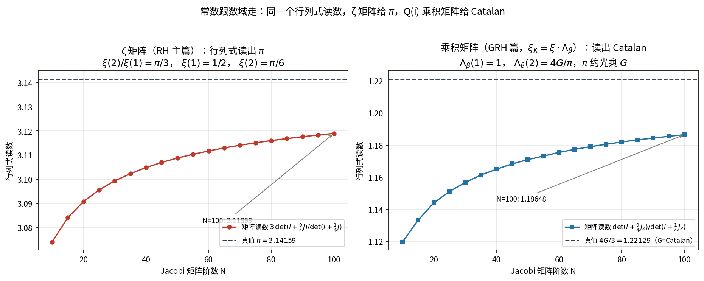
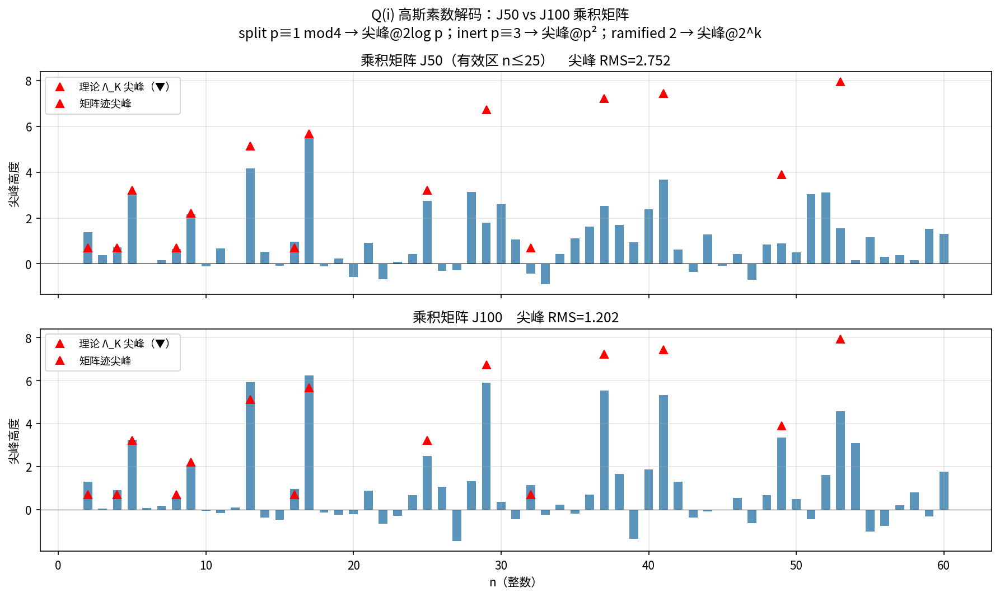

矩阵里"长"出来的数论常数
从 L 函数矩量构造的 Jacobi 矩阵，仅凭算术结构就能读出 π、Catalan 常数与高斯素数分解律
把完备 \(L\) 函数的矩量经 Gram–Schmidt 正交化，唯一确定出一串 Jacobi 递推系数，
组装成三对角矩阵 \(J_N\)——零自由参数、无拟合。
然后做一个再普通不过的矩阵运算：行列式比值。
矩阵会把这个 \(L\) 函数所"知道"的数论常数，一个个吐出来。
常数跟着数域走：有理数域给 \(\pi\)，高斯域 \(\mathbb{Q}(i)\) 给 Catalan 常数。
一、行列式比值为什么能读出常数
\(N\times N\) Jacobi 矩阵的行列式比值随阶数 \(N\) 收敛。以矩阵
\(\det(I+\tfrac94J)\big/\det(I+\tfrac14J)\) 为例，
它在 \(N\to\infty\) 时趋向一个由完备 \(L\) 函数在特定点取值决定的常数。
而那些取值，是经典解析数论里的知名常数：
- ζ 矩阵（RH 主篇，矩量来自 Riemann \(\xi\) 函数）：
\[
\frac{\xi(2)}{\xi(1)}=\frac{\pi}{3},\qquad \xi(1)=\frac12,\quad \xi(2)=\frac{\pi}{6},
\]
行列式比值的极限正是 \(\pi=3.14159\ldots\)。
- 乘积矩阵（GRH 篇，\(\xi_K=\xi\cdot\Lambda_\beta\)，其中 \(\beta\) 是
高斯整数环 \(\mathbb{Z}[i]\) 的 Dirichlet beta 函数）：
\[
\Lambda_\beta(1)=1,\qquad \Lambda_\beta(2)=\frac{4G}{\pi},
\]
行列式比值极限
\[
\frac{\xi_K(2)}{\xi_K(1)}=\frac{4G}{3}=1.22129\ldots,
\]
其中 \(\pi\) 因子被约光，剩下的 \(G\) 就是 Catalan 常数
\(G=\sum_{k=0}^{\infty}\frac{(-1)^k}{(2k+1)^2}=0.915965594\ldots\)。

图 1 · 同一个行列式读数，随 Jacobi 矩阵阶数 \(N\) 单调收敛。
左：ζ 矩阵 \(N=100\) 读 3.11899，趋向真值 \(\pi=3.14159\)（尾差约 0.7%，随 \(N\) 继续收敛）；
右：\(\mathbb{Q}(i)\) 乘积矩阵 \(N=100\) 读 1.18648，趋向真值 \(4G/3=1.22129\)。
📌 Catalan 常数 高斯域 Q(i)
\(G = 0.915965594177219015\ldots\)
与 \(\pi\) 之于有理数域类似，\(G\) 是高斯整数算术的"内置常数"：
它等于 \(\beta(2)\)（Dirichlet beta 函数在 2 的值），也等于
\(1-\dfrac1{3^2}+\dfrac1{5^2}-\dfrac1{7^2}+\cdots\)。
矩阵不需要被告知这个数——它只吃 \(\mathbb{Z}[i]\) 的素数分解数据，
行列式比值自己收敛到 \(4G/3\)。
📌 圆周率 π 有理域 Q
\(\pi = 3.14159265358979\ldots\)
ζ 矩阵的同一读数收敛到 \(\pi\)。两个数域、两套素数分解律、两个不同的矩阵，
读出各自域里的基本常数——这正是"算术信息编码在谱里"的直接证据。
二、矩阵迹会"解码"高斯素数
更惊人的是矩阵迹（对角线对数导数）。对 \(\mathbb{Q}(i)\) 乘积矩阵做迹展开，
第 \(n\) 个迹的尖峰位置与高度，精确对应高斯整数环的素数分解律：
| 整数 \(n\) | 高斯域分解类型 | 迹尖峰位置 |
|---|
| 分裂素数 \(p\equiv1\pmod 4\) | \(p=\pi\bar\pi\) 分裂成两个高斯素数 | 尖峰 @ \(2\log p\) |
| 惯性素数 \(p\equiv3\pmod 4\) | \(p\) 保持为高斯素数（惰性） | 尖峰 @ \(p^2\) |
| 分歧素数 \(2\) | \(2=-i(1+i)^2\) 分歧 | 尖峰 @ \(2\) 的幂次 |

图 2 · 乘积矩阵迹的尖峰（蓝柱）与理论 \(\Lambda_K\) 尖峰（红三角）逐条对齐。
上：\(J_{50}\)，有效区 \(n\le25\)，尖峰 RMS 偏差 2.75；
下：\(J_{100}\)，有效区扩大到 \(n\le32\)，RMS 降到 1.20，
并新解码 \(n=29\)（分裂，5.91 vs 理论 6.73）、\(n=49=7^2\)（惯性，3.34 vs 3.89）、
\(n=32=2^5\)（分歧）等点。矩阵越大，"看见"的高斯素数越多。
📌 素数迹公式 RMS 谱—素数对应
矩阵迹尖峰高度与理论 \(\log p\) 权重的均方根偏差：
\(J_{50}: 2.75 \;\to\; J_{100}: 1.20\)，
有效解码范围 \(n\le25 \to n\le32\)。
这与显式公式 / 素数迹公式
\(\psi(x)=x-\sum_\rho x^\rho/\rho-\cdots\)
的图像一致：零点（谱）求和还原出素数，矩阵把这一关系显式算了出来。
三、这些常数的意义
传统上，\(\pi\)、Catalan 常数这些数出现在 \(L\) 函数的特殊值里，靠解析延拓和
\(\Gamma\) 因子推导得到。而在这里，它们是纯线性代数运算的极限：
一个只由算术矩量唯一确定的、无自由参数的矩阵，做行列式和迹，就把常数和素数分解律
一并呈现。
这给 Hilbert–Pólya 图景提供了一个具体、可计算的版本：
算术信息不只决定了谱的位置（零点），也编码在矩阵的行列式和迹里——
后者直接给出数域的基本常数与素数分解统计。数域换了（\(\mathbb{Q}\to\mathbb{Q}(i)\)），
矩阵换了，读出的常数也从 \(\pi\) 换成 Catalan，完全跟随各自的算术。
口径说明：本页所有读数为
数值收敛观测（\(N\) 有限、尾部残差随 \(N\) 收敛），
用于展示"算术编码进矩阵"的物理图像；常数的解析推导与演绎证明见 RH 主篇与 GRH 篇
（
RH 中文页、
GRH 中文页）。
矩阵构造代码、系数表与全部数据见
GitHub 仓库。